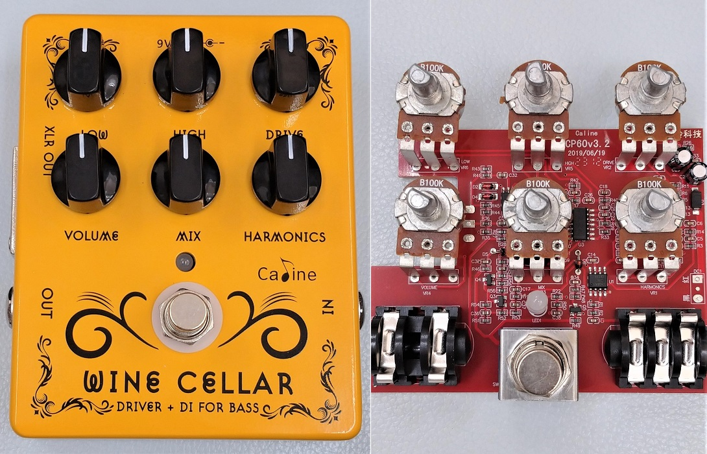
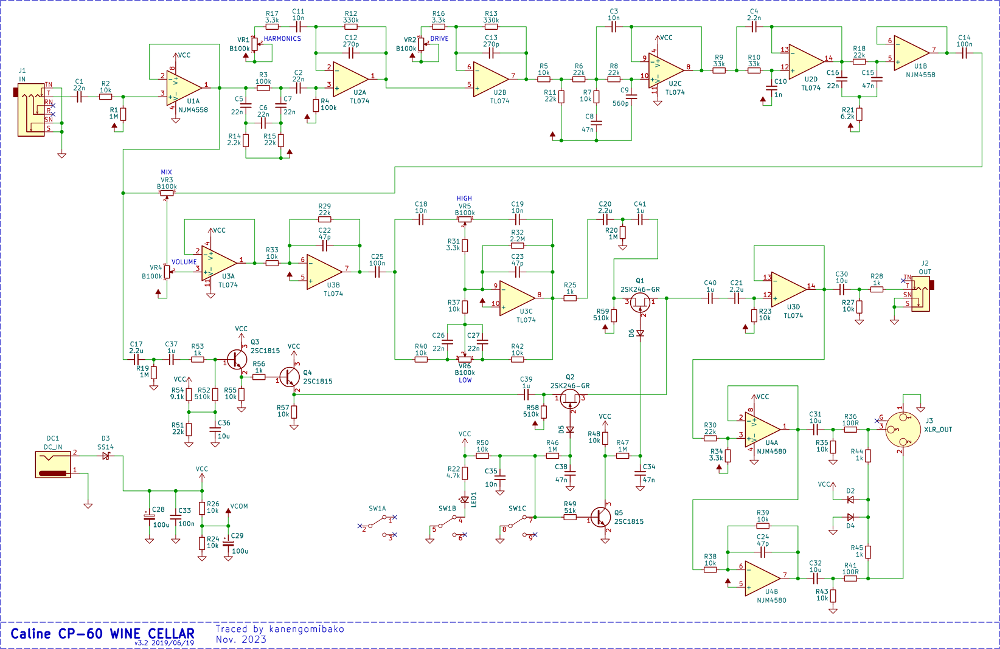
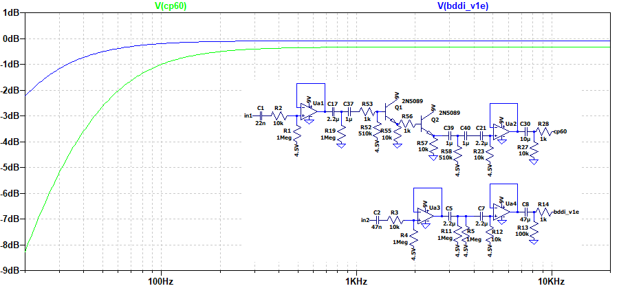
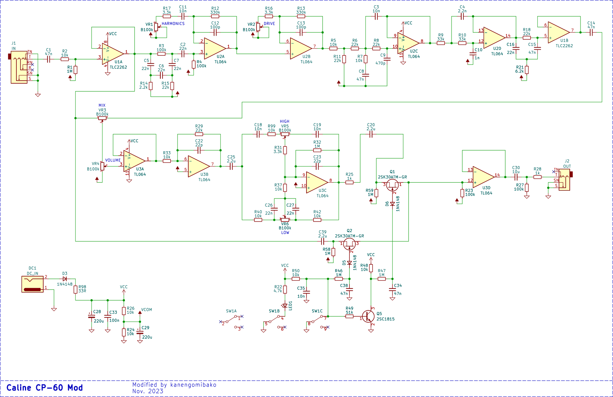
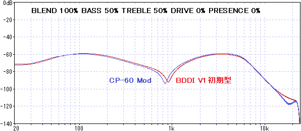

Caline CP-60 WINE CELLAR 解析・改造
2024年01月06日 カテゴリー：修理・改造・解析

Tech 21 SansAmp Bass Driver DI （以下BDDI）関連の解析や製作を今までいろいろと行ってきました（タグ：SansAmpBDDI）。そして最近新たにCaline CP-60 WINE CELLARというBDDIのクローンらしきエフェクターを見つけたので、解析することにしました。KiCadデータ（基板画像入り）はGitHubにあります。
▽回路図

C1、C25の値やバランス出力部への接続が同じなため、BEHRINGER BDI21を元にしていると考えられます。意図は不明ですが、バイパス部にトランジスタ2つを使ってバッファが組んであったり、ハイパスフィルタが追加されていたりする等の変更点があります。また、いくつかのコンデンサ（C9、C12、C13、C22、C23）がBDI21より大きい値になっています（発振対策かもしれません）。
気になるのが低音域の減衰です。バイパス音がどうなるかシミュレーションしました。

BDDI V1初期型でも少しは低音域の減衰がありますが、CP-60ではさらにカットされています。
【改造】
BDDI V1初期型に近づける改造を行いました。オペアンプは手持ちのものを使いましたが、他はほぼ同じです。

ファンタム電源対応のバランス出力は、定格電圧が高く容量が大きい両極性電解コンデンサを使用するのが望ましいです。ただ、そこまでやろうとすると別基板の追加が必要となり手間がかかり過ぎるので、バランス出力自体を使用しないようにしました。
周波数特性をBDDI V1初期型と比較しました。

谷となる周波数が少しズレています。BDDI V1初期型に使われている高誘電率系積層セラミックコンデンサは20年以上前のものなので、特性変化や経年変化が大きいと考えられます。